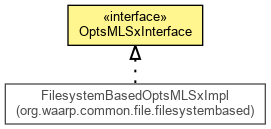

org.waarp.common.file
Interface OptsMLSxInterface
- All Known Implementing Classes:
- FilesystemBasedOptsMLSxImpl, PassthroughBasedOptsMLSxImpl
public interface OptsMLSxInterface

Interface for Option support (mainly inspired for MLSx FTP command)
- Author:
- Frederic Bregier
getOptsCharset
byte getOptsCharset()
- Returns:
- the optsCharset
setOptsCharset
void setOptsCharset(byte optsCharset)
- Parameters:
optsCharset - the optsCharset to set
getOptsCreate
byte getOptsCreate()
- Returns:
- the optsCreate
setOptsCreate
void setOptsCreate(byte optsCreate)
- Parameters:
optsCreate - the optsCreate to set
getOptsLang
byte getOptsLang()
- Returns:
- the optsLang
setOptsLang
void setOptsLang(byte optsLang)
- Parameters:
optsLang - the optsLang to set
getOptsMediaType
byte getOptsMediaType()
- Returns:
- the optsMediaType
setOptsMediaType
void setOptsMediaType(byte optsMediaType)
- Parameters:
optsMediaType - the optsMediaType to set
getOptsModify
byte getOptsModify()
- Returns:
- the optsModify
setOptsModify
void setOptsModify(byte optsModify)
- Parameters:
optsModify - the optsModify to set
getOptsPerm
byte getOptsPerm()
- Returns:
- the optsPerm
setOptsPerm
void setOptsPerm(byte optsPerm)
- Parameters:
optsPerm - the optsPerm to set
getOptsSize
byte getOptsSize()
- Returns:
- the optsSize
setOptsSize
void setOptsSize(byte optsSize)
- Parameters:
optsSize - the optsSize to set
getOptsType
byte getOptsType()
- Returns:
- the optsType
setOptsType
void setOptsType(byte optsType)
- Parameters:
optsType - the optsType to set
getOptsUnique
byte getOptsUnique()
- Returns:
- the optsUnique
setOptsUnique
void setOptsUnique(byte optsUnique)
- Parameters:
optsUnique - the optsUnique to set
getFeat
String getFeat()
- Returns:
- the String associated to the feature for MLSx
Copyright © 2009-2012 Waarp. All Rights Reserved.